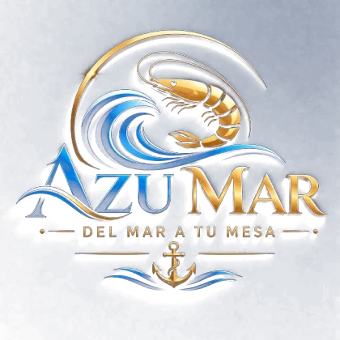

Bienvenidos al Restaurante y Marisquería AzuMar
Welcome to AzuMar Restaurant and Seafood House.
🇨🇷
Ver el menú en Español
🇺🇸
View the menu in English
Quepos, Costa Rica
12 md a 11 pm · Express
8775-8360